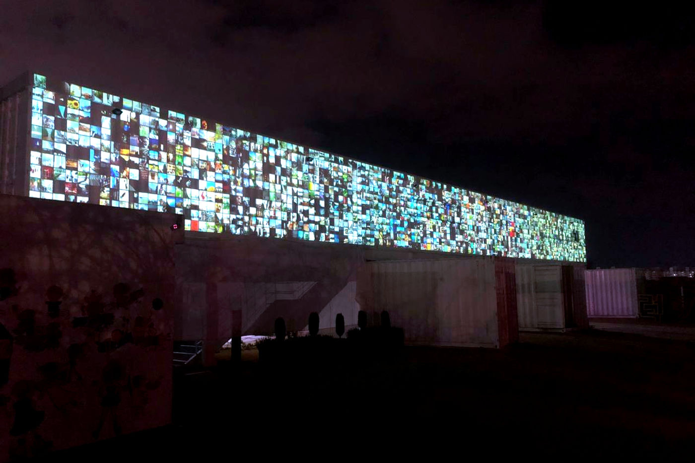

Group Exhibition — 2020
Industrial Complex
Biennale
소촌아트팩토리의 ‘I Question’은 질문을 바꾸었다 — “이 사진이 예술적으로 보이나요?”에서 “이 사진이 행복해 보이나요?”로.
At the Sochon Art Factory, ‘I Question’ changed its question — from ‘Does this photograph look artistic?’ to ‘Does this photograph look happy?’
‘I Question’은 인공지능이 관객과 만나 대화를 나누는 인터랙티브 미디어 아트입니다. 관객은 QR 코드로 접속해 AI의 질문에 답하고 자신의 사진을 올리며, 그 사진들은 AI가 감상한 이미지의 시각화로서 작품의 일부가 됩니다.
2020년 산단비엔날레 소촌아트팩토리 버전에서는 이 작업의 물음이 ‘예술’에서 ‘행복’으로 이동했습니다. 기존 I Question이 “이 사진이 예술적으로 보이나요?”라고 물으며 예술의 기준을 관객과 함께 더듬었다면, 이곳에서는 “이 사진이 행복해 보이나요?”라고 물으며 감정과 삶의 감각을 질문의 자리에 놓습니다. 정답이 없는 질문이라는 구조는 그대로 두되, 인공지능이 ‘행복’이라는 지극히 인간적인 개념을 어떻게 감지하고 오해하는지를 관객과 함께 들여다보는 것입니다.
‘I Question’ is an interactive media artwork in which an artificial intelligence meets and converses with its audience. Visitors join by QR code, answering the AI’s questions and uploading their own photos, which become part of the work as a visualization of the images the AI has appreciated. In this 2020 Industrial Complex Biennale version at the Sochon Art Factory, the work’s question shifted from ‘art’ to ‘happiness.’ Where the original I Question asked ‘Does this photograph look artistic?’ — feeling out the standard of art together with its audience — here it asks ‘Does this photograph look happy?’, placing emotion and the sense of a life where the question had been. The structure of an answerless question remains, but now it lets us watch, together, how an artificial intelligence senses — and misreads — so human a notion as happiness.
- 작품
- Work
- I Question (AI, participatory project, data visualization)
- 이 버전의 질문
- The question, here
- “이 사진이 행복해 보이나요?”
- ‘Does this photograph look happy?’
- 함께 보기
- Related
- I Question — Wooran Foundation, 2018
Sochon Art Factory, Gwangju — 2020